| 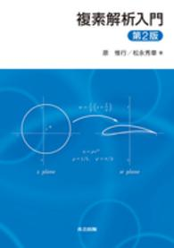 |
数学解析III（情報Ｐ） |
9784320110908 |
複素解析入門第2版 |
原惟行/松永秀章 |
共立出版 |
2052 |
|
|
線形代数（情報Ｐ） |
9784780605952 |
線形代数入門 |
辻川亨/出原浩史 |
学術図書出版社 |
1728 |
|
|
|
9784780605259 |
第5版 物理学基礎 |
原康夫 |
学術図書出版社 |
|
[第5版 基礎物理学]と間違えないよう注意 |
| 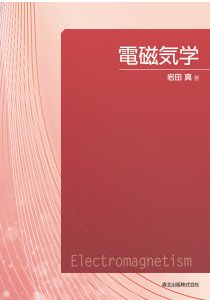 |
電磁気学（情報Ｐ） |
9784627156913 |
電磁気学 |
岩田真 |
森北出版 |
2640 |
|
|
基礎化学（情報Ｐ） |
9784807908226 |
ティンバーレイク教養の化学 |
カレン・ティンバーレイク/ウィリアム・ティンバーレイク |
東京化学同人 |
3132 |
|
| 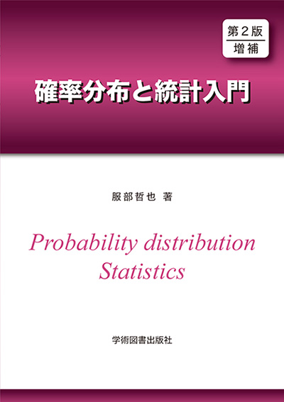 |
数理情報II（情報Ｐ） |
9784780607857 |
第2版 確率分布と統計入門 |
服部哲也 |
学術図書出版社 |
1450 |
白紙ページに公式等の書き込みあり |
| 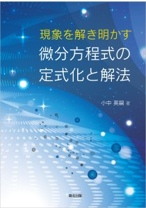 |
情報通信基礎 |
9784627062115 |
現象を解き明かす微分方程式の定式化と解法 |
小中英嗣 |
森北出版 |
3080 |
|
|
離散数学 |
9784764910546/td>
| はじめての離散数学 |
小倉久和 |
近代科学社 |
2592 |
|
| 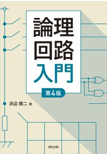 |
論理回路（情報Ｐ） |
9784627823648 |
論理回路入門（第4版） |
浜辺隆二 |
森北出版 |
2200 |
|
| 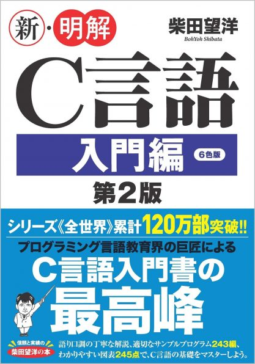 |
プログラミング演習I |
9784815609795 |
新・明解C言語 入門編 第2版 |
柴田望洋 |
SBクリエイティブ |
2530 |
|
| 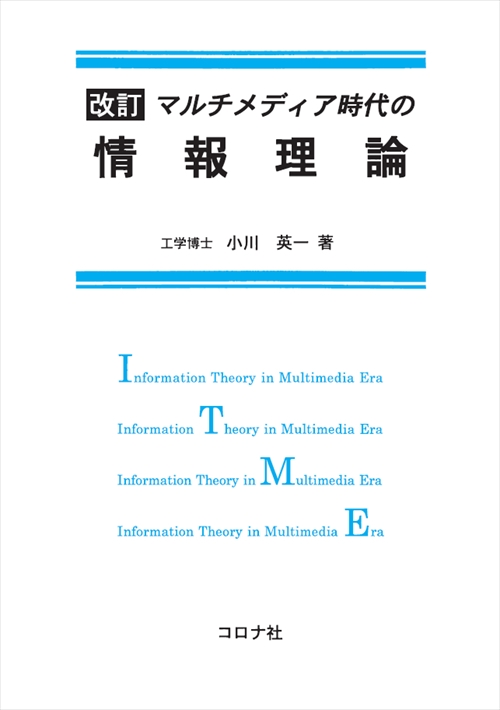 |
情報理論（情報Ｐ） |
9784339023725 |
マルチメディア時代の情報理論 |
小川英一 |
コロナ社 |
2592 |
表紙がちょっとやぶれてる |
|
コンピュータネットワーク |
9784320123472 |
コンピュータネットワーク概論 |
水野忠則/奥田隆史 |
共立出版 |
3024 |
|
| 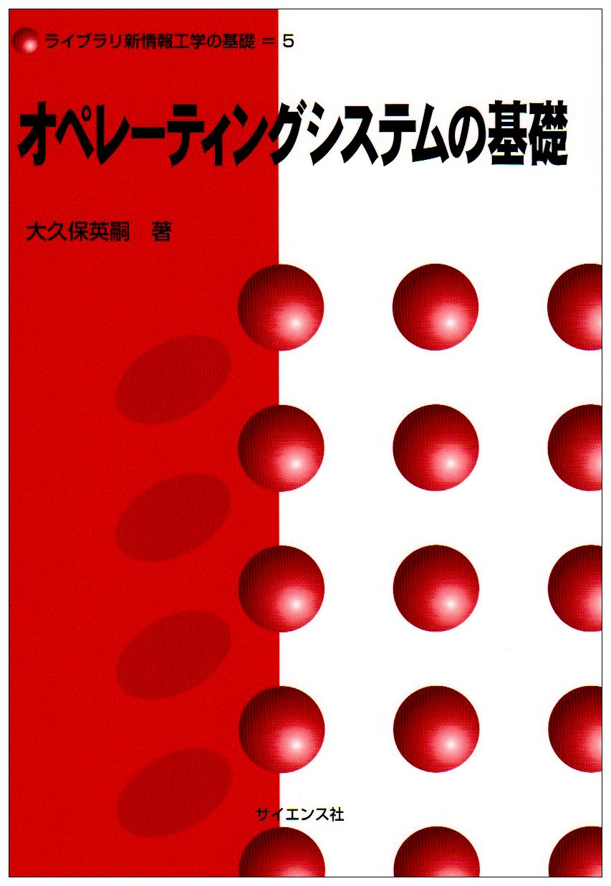 |
オペレーティングシステム |
9784781908601 |
オペレーティングシステムの基礎 |
大久保英嗣 |
サイエンス社 |
1728 |
|
| 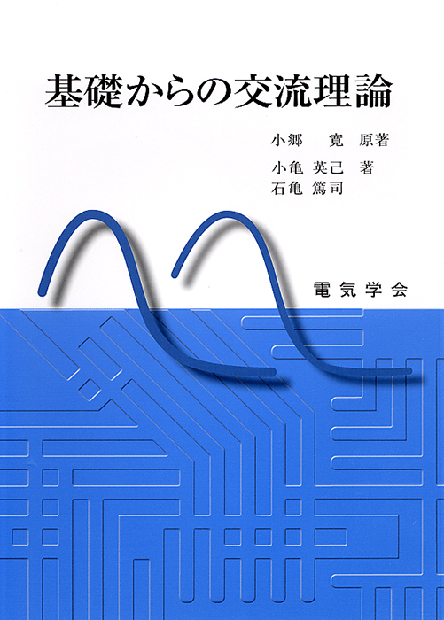 |
電気回路I（情報Ｐ） |
9784886862303 |
基礎からの交流理論 |
小郷寛/小亀英己 |
電気学会 |
3410 |
|
| 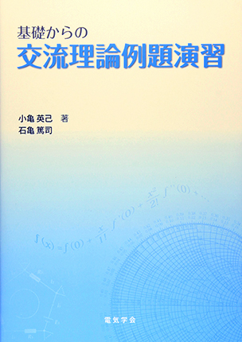 |
電気回路I（情報Ｐ） |
9784886862815 |
基礎からの交流理論例題演習 |
小亀英己/石亀篤司 |
電気学会 |
3190 |
|
| 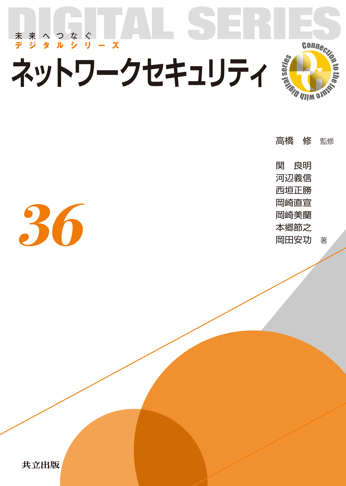 |
情報セキュリティ |
9784320123564 |
ネットワークセキュリティ |
高橋修/関良明 |
共立出版 |
3024 |
|
![ディジタル画像処理 [改訂第二版]](ディジタル画像処理 [改訂第二版].jpg) |
画像工学 |
9784903474649 |
ディジタル画像処理 [改訂第二版] |
ディジタル画像処理編集委員会 |
画像情報教育振興協会 |
4290 |
|
| 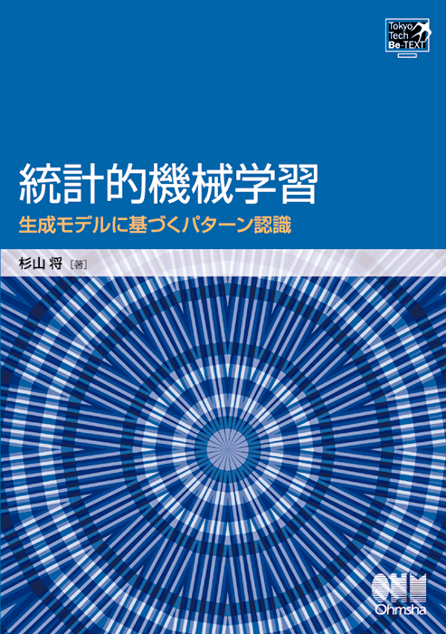 |
機械学習 |
9784274502484 |
統計的機械学習 |
杉山将 |
オーム社 |
3024 |
|
| 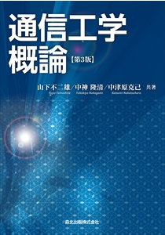 |
通信工学（情報Ｐ） |
9784627705937 |
通信工学概論 |
山下不二雄 |
森北出版 |
|
|
| 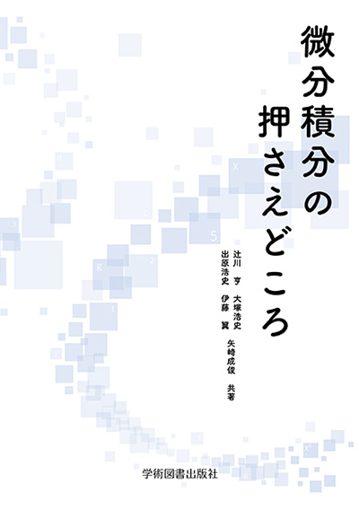 |
|
9784780607833 |
微分積分の押さえどころ |
辻川亨/大塚浩史/出原浩史/伊藤翼/矢崎成俊 |
学術図書出版社 |
|
|
| 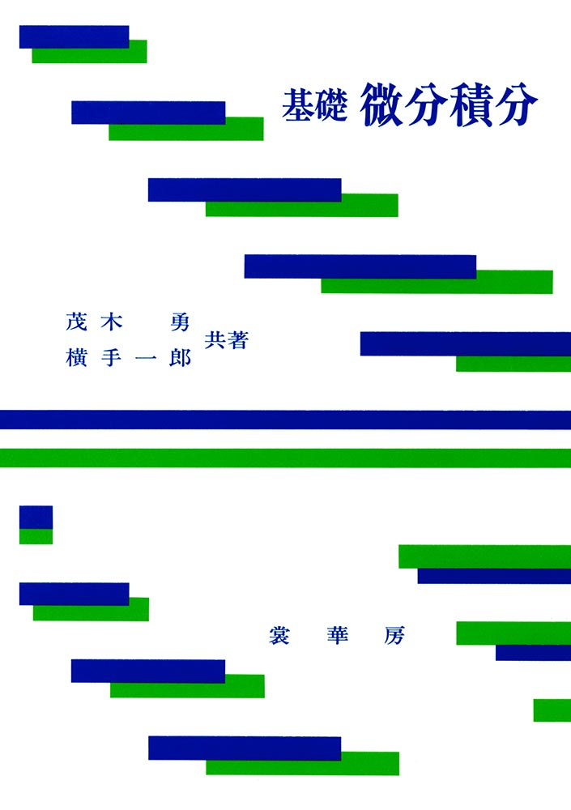 |
|
9784785315122 |
基礎 微分積分 |
茂木勇/横手一郎 |
裳華房 |
|
|
| 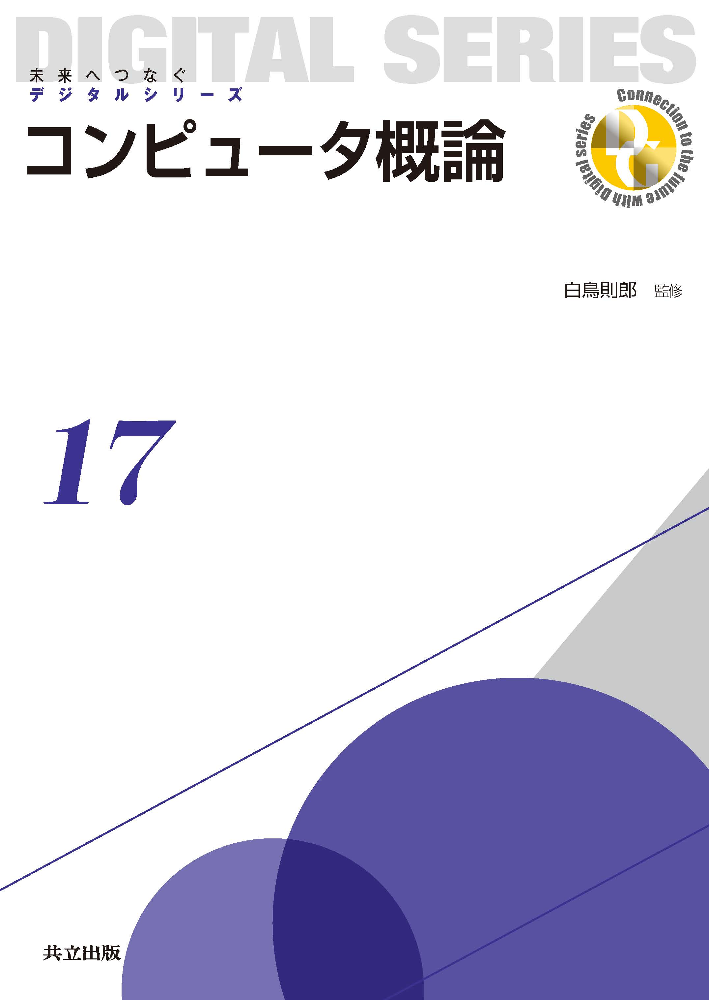 |
|
9784320123175 |
コンピュータ概論 |
白鳥則郎/山崎克之 |
共立出版 |
|
|
| 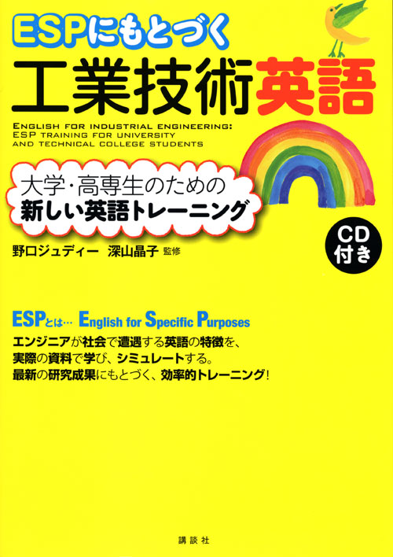 |
|
9784061557840 |
ESPにもとづく工業技術英語 |
野口ジュディー/深山晶子 |
講談社 |
|
|
| 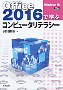 |
|
9784407340600 |
Office2016で学ぶコンピュータリテラシー |
小野目如快 |
実教出版 |
|
全Unitに答えの書き込みあり |
| 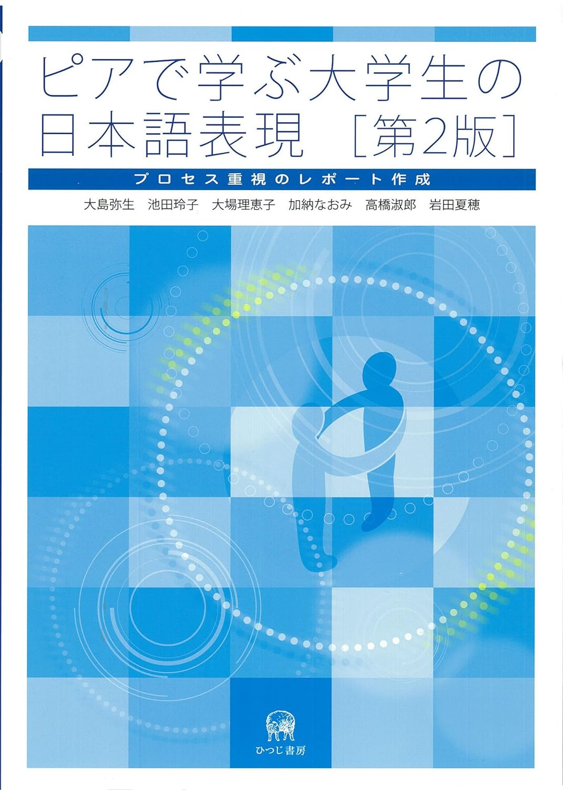 |
|
9784894767096 |
ピアで学ぶ大学生の日本語表現［第2版］ |
大島弥生/池田玲子/大場理恵子/加納なおみ/高橋淑郎/岩田夏穂 |
ひつじ書房 |
|
提出用シートは使用済み |
| 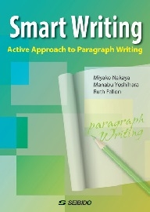 |
|
9784791960323 |
Smart Writing |
Miyako Nakaya / Manabu Yoshihara / Ruth Fallon |
成美堂 |
|
|
|
|
9784523179306 |
Guess What⁈ |
松井夏津紀/飯田泰弘/金田直子/Ken Wing Poon/横山仁視 |
南雲堂 |
|
Unit1のみ書き込みあり |
|
|
9784823410819 |
ネット時代の中国語 |
張婧禕/玉岡賀津雄/王莉莎 |
ひつじ書房 |
|
メモや答えの書き込みあり |
|
英語T4 |
9784757433960 |
TOEIC® L&Rテスト 究極の模試600問＋ |
ヒロ前田 |
株式会社アルク |
|
|
| 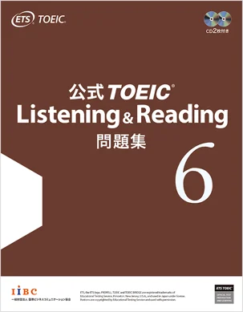 |
|
9784906033584 |
公式TOEIC Listening & Reading 問題集 6 |
ETS |
国際ビジネスコミュニケーション協会 |
|
|
|
|
9784480081216 |
レポートの組み立て方 |
木下 是雄 |
ちくま学芸文庫 |
|
|
| 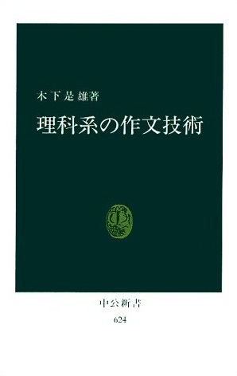 |
|
9784121006240 |
理科系の作文技術 |
木下是雄 |
中公新書 |
|
|